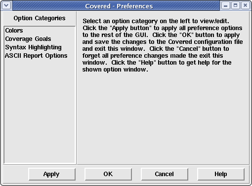

The preferences window allows the user to adjust the view of some of the GUI elements for the purpose of more easily analyzing coverage information for a specific user. Figure 1 shows the preferences window that is created when the user selects the Tools > Preferences... menu option from the main window.
Figure 1. The Main Preferences Window
On the left side of the preferences window is a list of option categories that can be modified. Selecting any one of the items in the listbox will display the modifiable options to the frame to the right of the listbox. The following option categories exist:
Clicking on the Apply button will cause the currently selected preference options to be immediately updated in Covered but will not update the preference option values in the .coveredrc file. This has the effect of changing the preferences for the current application only. Clicking on this button will not close the Preferences window.
Clicking on the OK button will cause the currently selected preference options to be immediately updated in Covered and will update the .coveredrc file with the new values. This also causes the Preferences window to close.
Clicking on the Cancel button will cause the the Preferences window to close without updating Covered with the currently selected values and without updating the .coveredrc file.
Clicking on the Help button will cause the help page for the currently selected 'Option Category'.
User preferences are loaded from the ".coveredrc" file that is searched for in the following order:
If user preferences are changed in this window and the OK button is pressed, the settings are immediately saved back to a configuration file and the GUI is immediately updated to reflect the new user changes. If the Cancel button is pressed, all changes are thrown away and the configuration file remains unchanged. The location of the stored configuration file depends on which configuration file location was initially loaded. The following table describes this correlation.
Table 1. Location of Written .coveredrc File According to the Location of Read .coveredrc File
| Loaded config file location | Stored config file location |
| Current directory | Current directory |
| Home directory | Home directory |
| Install directory | Current directory |
| None found | Current directory |